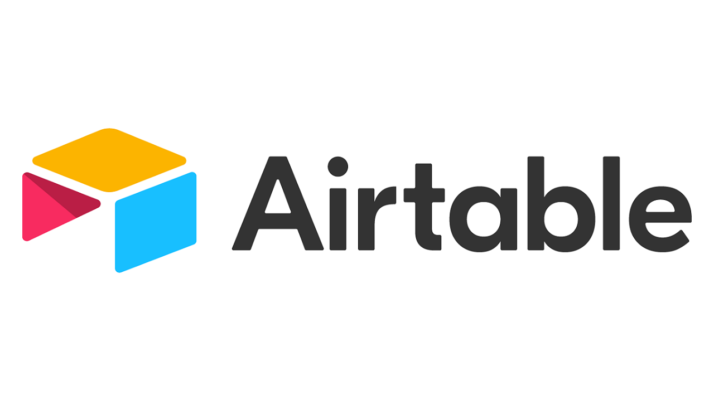
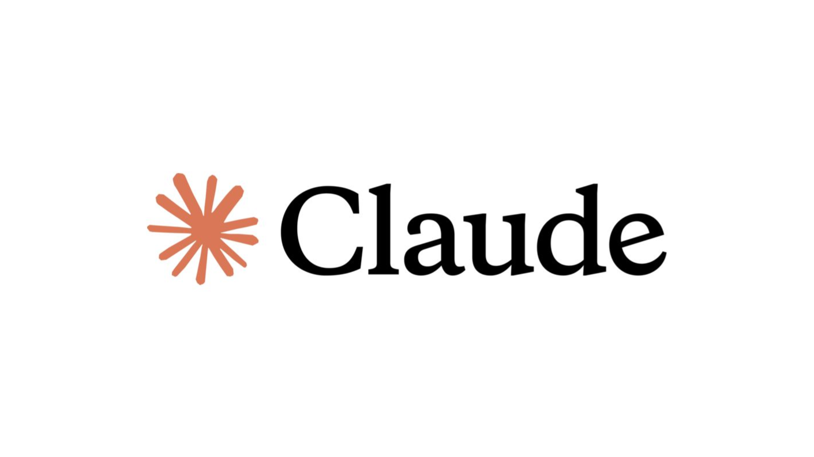
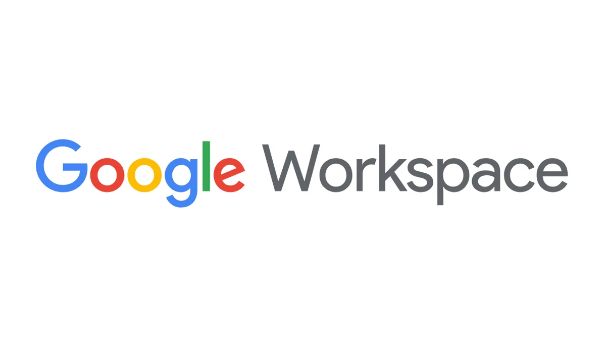
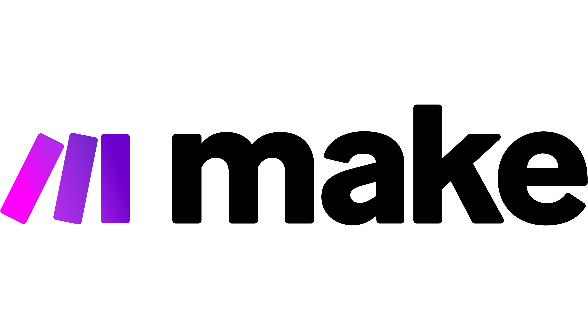
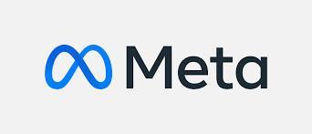
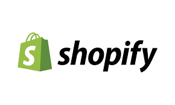
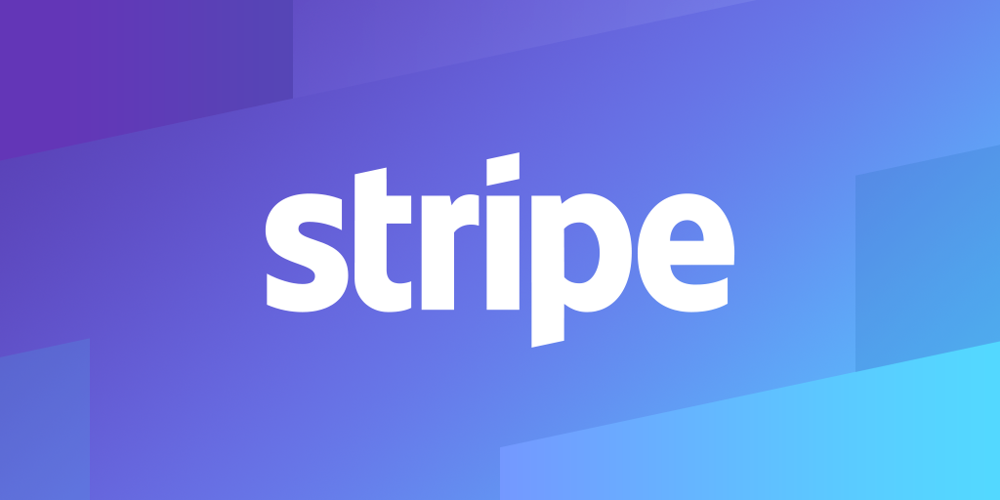
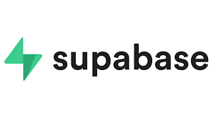
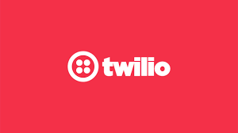

Voice AI Agents
Conversational systems for calls, intake, follow-up, and qualification.
I build AI-powered systems that connect apps, data, workflows, and customer interactions into one automated business engine.












I specialize in designing and building AI-powered ecosystems that connect applications, automate workflows, eliminate repetitive tasks, and improve business operations.
I help businesses transform manual processes into intelligent systems through AI agents, CRM automation, API integrations, and scalable workflow architectures.
Conversational systems for calls, intake, follow-up, and qualification.
Funnels, pipelines, calendars, tags, triggers, and client operations.
Reliable process engines that move data and trigger work automatically.
Capture, qualify, route, and nurture leads across modern sales channels.
Custom app connections, webhooks, data syncs, and operational dashboards.
Scheduling flows with confirmation, reminders, and internal alerts.
Problem: Businesses miss calls outside operating hours or spend significant staff time answering repetitive scheduling questions.
Solution: Built an AI voice receptionist using VAPI and Google Calendar that handles incoming calls, checks availability, and books appointments automatically.
Impact: Provided 24/7 appointment booking, reduced administrative workload, improved customer response speed, and eliminated scheduling bottlenecks.
Problem: Restaurants manually read reviews, surveys, and complaints, making it slow to find urgent issues and repeated problems.
Solution: Built a Zapier automation using AI by Zapier to classify feedback by category, sentiment, urgency, summary, and suggested action. Urgent cases are sent to Slack, and weekly reports are generated for leadership.
Impact: Managers can respond faster, reduce manual work, and see customer issues clearly every week.
Problem: Turning videos into social posts required significant manual effort.
Solution: Built an AI workflow that transcribes videos, generates captions, and publishes to Facebook and LinkedIn.
Impact: Reduced preparation time by up to 80%, improved consistency, expanded reach, and removed repetitive tasks.
Problem: Slow Facebook inquiry responses caused missed leads and delayed service.
Solution: Built an AI chatbot that answers inquiries, qualifies leads, stores data in Airtable, and sends WhatsApp alerts.
Impact: Reduced manual replies by 70%, moved response time from hours to seconds, and improved lead capture.
Problem: Orders, inventory, and payments were tracked manually across several systems.
Solution: Automated order sync, inventory updates, duplicate prevention, and low-stock Slack alerts.
Impact: Removed manual reconciliation, reduced inventory errors, and centralized operational data.
Problem: Manual real estate lead handling delayed follow-ups and appointment scheduling.
Solution: Built a landing page integrated with GoHighLevel for lead capture, tagging, emails, notifications, and bookings.
Impact: Faster responses, reduced workload, automated scheduling, and stronger lead management.
Let's connect your tools, automate your workflows, and turn your business processes into an intelligent system.
Tell me about your business and the automation challenges you want to solve.
Schedule a free 30-minute consultation to discuss your business challenges, automation opportunities, and AI solutions tailored to your workflow.